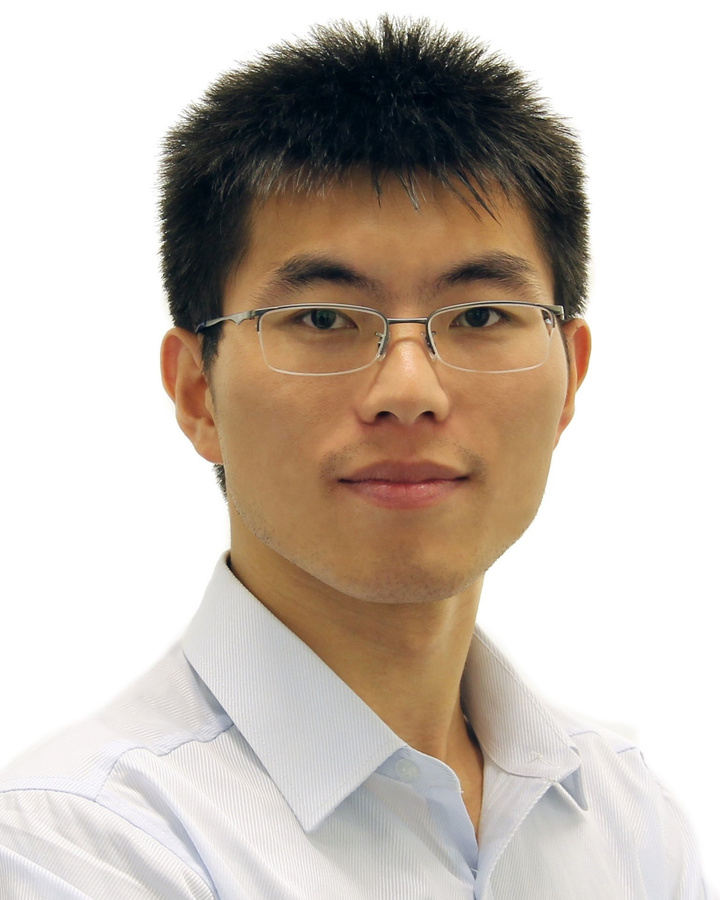
Associate Professor | bwang@hbku.edu.qa
Dr. Bo Wang received the B.Eng. degree (Excellent Graduate Honor) in Electrical and Electronic Engineering from Zhejiang University (ZJU), Hangzhou, China, in 2010; and the M.Phil. and Ph.D. degrees in Electronic and Computer Engineering from the Hong Kong University of Science and Technology (HKUST), Hong Kong, in 2012 and 2015, respectively, under the supervision of Professor Amine Bermak, an IEEE Fellow. He was an Assistant Professor in the College of Science and Engineering, Hamad Bin Khalifa University (HBKU), Qatar, from 2017 to 2023, and is now an Associate Professor and Postgraduate Program Coordinator of the CElE Division.
In 2016, he worked in RLE, Massachusetts Institute of Technology (MIT), with Professor Jing Kong and Professor Anantha P. Chandrakasan on low-power graphene-based pressure sensor interface design. From 2010 to 2015, he was with the Smart Sensory Integrated System Laboratory (s2is) of HKUST as a research assistant and then a research associate. From 2012 to 2014, he also worked as a mixed-signal IC designer at ZAMI, Hangzhou, to commercialize the chip during his Ph.D. research. He is a member of IEEE (CAS Society and SSCS). He received the Best Design Award at the Asia and South Pacific Design Automation Conference (ASP-DAC) in 2016. He served as the Technical Program Co-Chair of the International Conference on Microelectronics (ICM) in 2024. He also serves as a Technical Committee Member of the IEEE CAS Technical Committee on Sensory Systems and is an Associate Editor for the IEEE Sensors Journal.
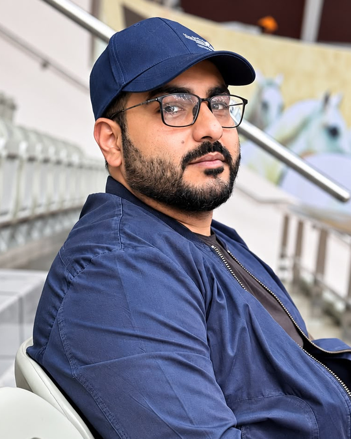
Postdoctoral Researcher | muhawan@hbku.edu.qa
Dr. Muhammad Asfandyar Awan received his B.Eng. degree in Electronics Engineering from COMSATS University, Pakistan, in 2009, and his M.Eng. degree in Electrical and Electronics Engineering from Linköping University, Sweden, in 2012, with an emphasis on System-on-Chip design. From 2013 to 2017, he was a Research Assistant at the Microelectronic Circuits Centre Ireland (MCCI), where he worked on low-power, low-speed biomedical front-ends and analog building blocks for a high-speed (2 GS/s) ADC. Before joining HBKU in 2020, he served as an Analog Design Engineer at a US-based IC design company from 2017 to 2019. He received his Ph.D. from HBKU in 2024 and is now a Postdoctoral Researcher focusing on bioluminescence sensor readout.
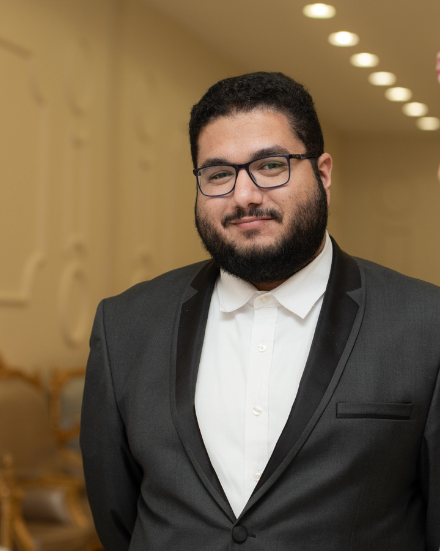
Ph.D. Student | maab89375@hbku.edu.qa
Mazen Abouelezz received his B.Sc. in Electrical Engineering from King Fahd University of Petroleum and Minerals (KFUPM), Saudi Arabia, in 2020. He subsequently worked as a research assistant intern at King Abdullah University of Science and Technology (KAUST). He then joined KFUPM as a research assistant and M.Sc. student, where his research focused on electronic circuit design, particularly on developing a temperature- and process-insensitive current-to-time converter. He earned his M.Sc. degree in Electrical Engineering in 2024. In 2025, he began his Ph.D. studies in Computer Science and Engineering at Hamad Bin Khalifa University (HBKU). His current research focuses on 3D imaging, with an emphasis on SPAD readout circuit design.
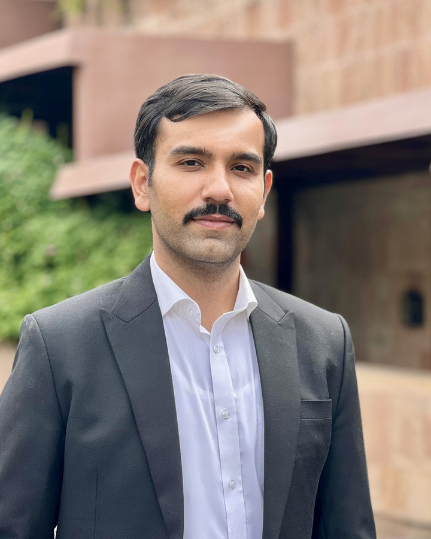
Ph.D. Student | mufa89939@hbku.edu.qa
Muhammad Haris Farooq received his B.S. in Electrical Engineering from the Institute of Space Technology (IST), Islamabad, in 2020, and his M.S. in Electrical Engineering with specialization in Integrated Circuits and Systems from the National University of Sciences and Technology (NUST), Islamabad, in 2024. From 2023 to 2025, he worked as an Analog and Mixed-Signal IC Designer at the NUST Chip Design Centre (NCDC). In 2025, he joined HBKU as a Ph.D. student. His research interests include custom analog and mixed-signal IC design, low-power data converters, and power management circuits.
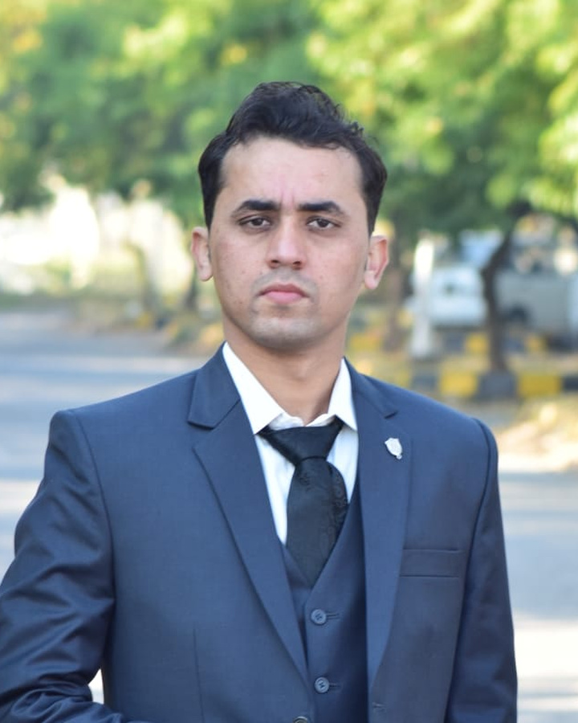
Ph.D. Student | alra67681@hbku.edu.qa
Ali Raza received his B.Sc. in Computer Engineering from HITEC University, Taxila, in 2020 and his M.Sc. in Computer Engineering from UET Taxila in 2023. He worked as a Research Scholar at the Swarm Robotics Lab, NCRA, specializing in computer vision, edge computing, and human activity recognition. He also served as CTO at U-Go, where he developed machine learning-based speech assessment applications. Then, he worked as a Lecturer at NUTECH, Islamabad, and a Lab Engineer at HITEC University. He was a finalist in the OpenCV Competition 2021 and the National Idea Bank. In 2024, he started his Ph.D. research on edge AI accelerator design for sensing applications.
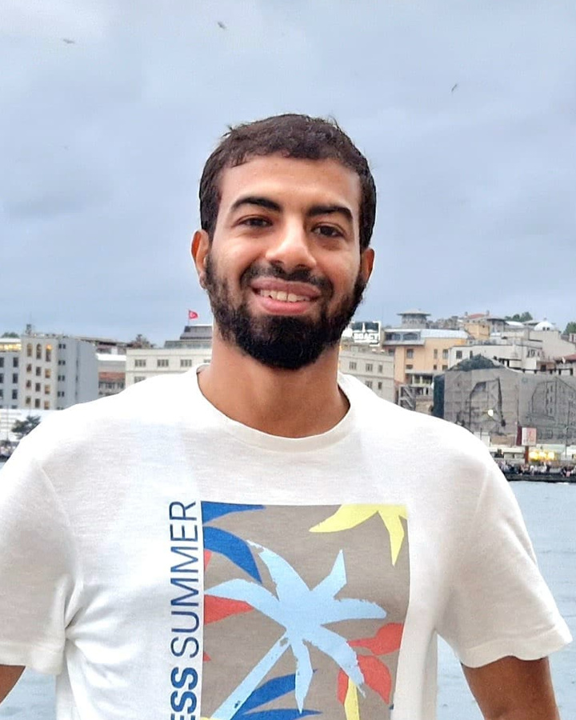
Ph.D. Student | amgh58196@hbku.edu.qa
Amgad Ghonem received his B.Sc. and M.Sc. degrees in Electronics and Communications Engineering from Ain Shams University, Egypt, in 2013 and 2016, respectively. During his M.Sc., he worked as a research assistant with a focus on SRAM design for low-voltage operation. From 2017 to 2021, he worked as a research assistant at RWTH Aachen University, Germany, where he worked on TCAMs in different technologies, focusing on emerging-memory-based non-volatile TCAMs in 22 nm technology. In 2022, he completed a project management program. Before joining HBKU for his Ph.D. in 2023, he worked as a Senior Design Engineer at X-FAB, Germany. His research interests include custom digital and mixed-signal circuit design for biomedical applications.
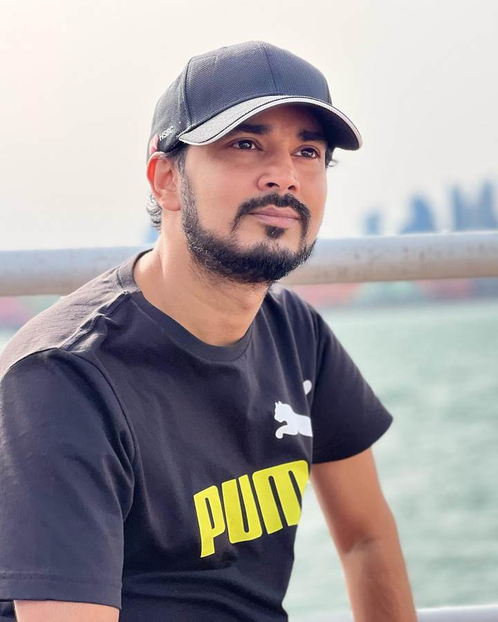
Ph.D. Student | zais23380@hbku.edu.qa
Zain Ul Islam received his B.S. in Electronic Engineering from International Islamic University Islamabad (IIUI) and M.S. in Electrical Engineering from the National University of Sciences and Technology (NUST), Pakistan. He is currently pursuing his Ph.D. degree. His research interests include RF antennas and microwave engineering. He has authored or co-authored around ten research papers in well-reputed international conferences and journals, and has received two Best Paper Awards at IEEE conferences.
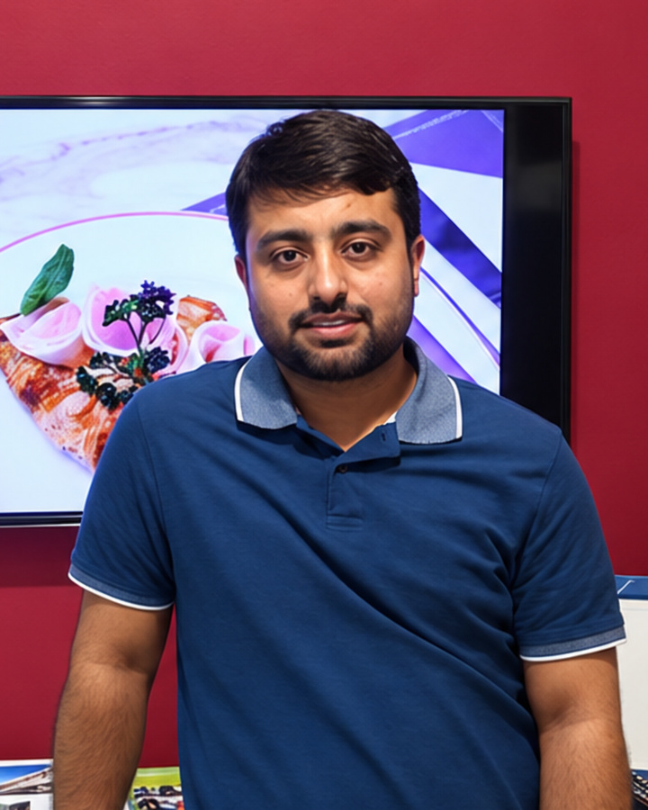
Research Assistant | khahmad@hbku.edu.qa
Khalil Ahmad received his B.Sc. degree in Mechatronics Engineering from the University of Engineering and Technology (UET), Taxila, Pakistan, in 2013. Before joining HBKU, he served as an Embedded Engineer at a Qatar-based start-up, developing Internet of Things (IoT) products. He has extensive experience in developing IoT devices with different communication modes (Wi-Fi, BLE, RF), covering research & development, PCB design, firmware programming, sensor–microcontroller integration, and mechanical fabrication.
Ph.D. in 2024, Postdoc until 2026/09
Dr. Abubakar Abubakar received the B.Sc. degree in Electronics and Communications Engineering from the American University of Ras Al-Khaimah (AURAK), UAE, in 2014, and the M.Sc. and Ph.D. degrees in Data Science and Engineering and Computer Science and Engineering from Hamad Bin Khalifa University (HBKU), Doha, Qatar, in 2020 and 2024, respectively. He was a Postdoctoral Researcher at HBKU from late 2024 to Sept. 2026. His research interests include CMOS image sensors, hardware-friendly AI, and integrated circuits (ICs) for edge AI.
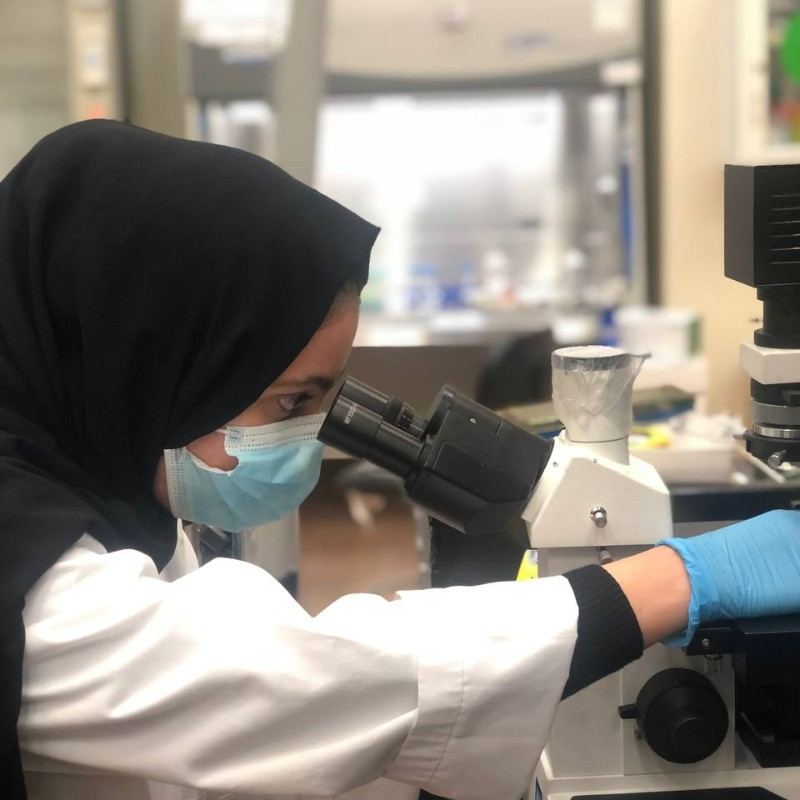
Research Assistant
Samar Shurbaji received her B.Sc. degree in Biomedical Sciences in 2016 and her Master's degree in Materials Science and Technology in 2019, both from Qatar University. Ms. Shurbaji's experience is mostly focused on projects in the biomaterials field as well as microfluidics. She was involved in projects including nanomaterial production, inducing shear stress on cell monolayers using microfluidic devices, and materials fabrication. She served as an RA at HBKU for one and a half years, working on an integrated bioluminescence sensing system.
M.S. in 2023, Research Assistant
Neam Fares received her B.Sc. degree in Computer Engineering from Qatar University in 2019 and her M.S. degree in Cybersecurity from Hamad Bin Khalifa University, Qatar, in 2023. Her research interests include hardware security, cryptography, and edge device security. She served as an RA at HBKU for a year, working on a low-power, lightweight crypto engine for IoT devices.
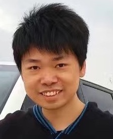
Ph.D. in 2021/04, Postdoc until 2022/03
Dr. Tsz Ngai Lin received the B.Eng. degree (First Class Honours) in electronic and communications engineering from The University of Hong Kong (HKU), Hong Kong, in 2013, and the M.Phil. degree in electronic and computer engineering from The Hong Kong University of Science and Technology (HKUST), Hong Kong, in 2016. His research interests include instrumentation amplifiers, precision analog and mixed-signal interface electronics, and low-power circuit design. Dr. Lin was a recipient of the HKUST postgraduate studentship and the HBKU full scholarship. He joined our group to pursue the Ph.D. degree in Jan. 2017 and defended his thesis in April 2021. After that, he was a postdoc in our group from Aug. 2021 to March 2022 before he joined Qualcomm.
Senior Research Scientist, 2018/12 – 2021/06
Dr. Ying Yi was a post-doctoral fellow with the Department of Electrical and Computer Engineering at the University of British Columbia from July 2016 to Sep. 2018. He received the M.S. degree from the Department of Electronics and Radio Engineering, Kyung Hee University in 2010, and the Ph.D. degree in electrical engineering from the University of British Columbia in 2016. His research interests are Bio-MEMS, implantable electronics, RF wireless systems, and circuits. He joined our group as a senior scientist in Dec. 2018 and left in June 2021.
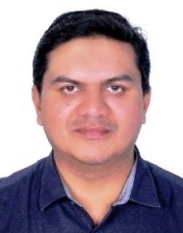
Postdoc, 2019/12 – 2021/06
Dr. Nasir A. Quadir received the B.Tech. degree in electronics and communication engineering from Jamia Millia Islamia University, New Delhi, India, in 1998, the M.Sc. degree in electronics engineering from Universiti Sains Malaysia in 2001, and the Ph.D. degree in electrical engineering from University College Cork, Ireland, in 2014. From 2001 to 2010, he was with Sires Labs Sdn. Bhd., Malaysia, designing and developing transceiver chipsets for automotive applications using fiber optic communication. From 2013 to 2016, he was an SRC Post-Doctoral Fellow with the American University of Sharjah, UAE. During that time, his research was focused on developing a biomedical humidity-based CMOS sensor for orthodontic applications as well as on designing rectifiers for ambient energy harvesting. From 2017 to 2019, he was an Associate Professor at CMR Institute of Technology. His research interests include low-power high-speed optical links, energy harvesting, and sensor interfaces. He joined our group as a postdoc in Dec. 2019 and left in June 2021.
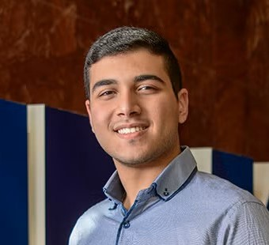
M.S. Student
Ghassan Saad received his B.S. degree (Best Student Graduate Award) in Computer Engineering from Hamad Bin Khalifa University, Qatar, in 2021. He pursued his M.S. degree in Data Science and Engineering at HBKU. His research interests include machine learning, deep learning, and hardware acceleration.